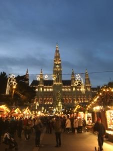
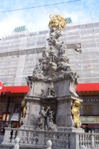
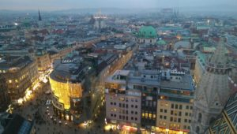
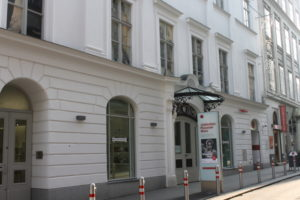
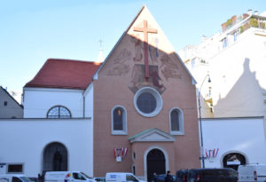
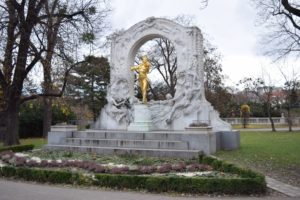
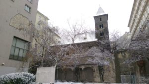

Take a virtual tour by hovering on the pulsating dots below for information on important sites in Vienna. Click anywhere on the page to close the pop-ups or follow the links for more information!
The Burgtheater was commissioned by Empress Maria Theresa in 1741, to be located right next to the Hofburg. In 1888, a larger version was created on the Ringstrasse and the old one was destroyed. To find out more about the theater, click here .

To view the other Christmas markets in Vienna and across Austria, click here .
The idea of a Parliament originated by Emperor Franz Joseph who wanted to unite his territories, each anxious for autonomy. Three years later, in 1864, the Emperor announced an architectural competition for the building of the new Parliament. Theophil von Hasen won the competition and built the Parliament in the style of the ancient Greeks, to symbolize democracy. The horse tamers, pictured on the left of the main building, symbolize the idea that the parliament members have to keep their emotions in check when in office. While the Emperor never stepped foot in the new Parliament, it was an important first step to increasing the democratic process in Austrian territories.
Learn more about the Austrian Parliament .
In the middle of Maria-Theresien-Platz is a statue of the square's namesake, Empress Maria Theresa. Ruling throughout a large part of the 18th century, Empress Maria Theresa was the only female Hapsburg monarch. She was a progressive ruler and instilled those ideals in her children, most notably, Joseph II. Of her sixteen children, the most famous is Marie Antoinette, who, like her siblings, was married off in order to strengthen the monarchy. Only one of her children was allowed to marry for love and that was Marie Christina, Maria Theresa's favorite child.
Maria-Theresien-Platz is bordered by twin buildings: Natural History Museum on the Northwest and Art History Museum on the Southeast.
Heldenplatz, or the Square of Heroes, is named as such after the two equestrian statues designed by Anton Dominik Fernkorn in the 1860s. The statue facing the New Hofburg is of Archduke Charles* of Austria, the first general to defeat Napoleon in open battle. The statue facing that of Archduke Charles and with its back to the New Hofburg is that of Prince Eugene of Savoy, who was critical in defeating both the French and Turkish armies during the early 1700s.
The New Hofburg project was never completed as there was supposed to be an identical building behind the statue of Archduke Charles. However, because of the First World War, the construction was paused. When the monarchy fell in 1918, the project was abandoned.
Moreover, the name of the square, the Square of Heroes, is quite ironic. On March 15th, 1938, Hitler took to the balcony of the New Hofburg to announce the Anschluss , i.e. the annexation of Austria. I think we can all agree that he was no hero but then again, the name is probably one of the reasons why Hitler chose to make his speech there.
*Archduke Charles was the adopted son of Albert of Saxe-Teschen, founder of the Albertina, and of Archduchess Marie Christine of Austria, favorite daughter of Maria Theresa and the only one allowed to marry for love. His biological parents are actually Emperor Leopold II (Archduchess Marie Christine's brother) and Maria Luisa of Spain. Archduke Charles was adopted by Emperor Leopold II's brother because the couple could not have children. Confused? I know I was. Explore this (simplified) Habsburg family tree .
Behind St. Micheal's Wing of the Hofburg (i.e. the winter residency of the Hapsburgs) is the "In der Burg" square, named very logically as is Austrian tradition. In the middle of the square is a statue of Holy Roman Emperor Franz II (also known as Austrian Emperor Franz I). Holy Roman Emperor Franz II divided the Holy Roman Empire in 1804 in two when he noticed that Napoleon was advancing swiftly. He created the Austrian Empire and became Austrian Emperor Franz I. In this way, he was able to maintain control of Austria even after the Holy Roman Empire dissolved in 1806.
To the right of the statue are the Imperial Apartments. The statue stares at the Swiss Gate, named after the ones initially hired to protect the Old Hofburg. The Old Hofburg refers to the castle believed to be built in the 13th century by the Babenberg dynasty. It currently houses the treasury, displaying the crown jewels, and the Hofburg Chapel, where the Vienna Boys' Choir sings every Sunday.
The Silver Collection, Imperial Apartments and Sisi Museum are a must for any basic understanding of Vienna and its history. This 3 in 1 museum combo is the perfect start to any visit in Vienna. Be sure to grab the audio guide because it gives very good information on the objects that have so carefully been placed in every room!
{kind=link}
To learn more about Emperor Franz Joseph and his beloved Empress Sisi, click here .
Emperor Joseph II co-ruled with his mother, Empress Maria Theresa. Being brought up by Maria Theresa, Joseph II had progressive reforms, similar to those of his mother. Even though he had a couple of policies, most notably his decree for reusable coffins, which did not sit well with the people, he was generally a very successful and beloved king. Josefsplatz, halfway between the Hofburg and Albertina, is thus dedicated to him. The statue in the middle of the square depicts Emperor Joseph II, wearing Roman clothes, on a horse. The Habsburgs believed that they were decedents of the ancient Roman Emperors and therefore have quite a few of their statues in this style.
To the left of the statue is St. Augustine's Church. Behind the statue is the National Library. To the right is the Spanish Riding School.


Can you spot Rathaus in the distance? What about the Hofburg? St. Michael's Church?

Click here to get a glimpse of what you will find in the museum.

On Albertinaplatz stands the Monument Against War and Fascism . It is composed of four parts. The first part is the split stone monument called the Gates of Violence . On the front, one can make out a woman giving birth to a soldier. On the back, you can see a gas-mask, a knight swinging his sword as well as chained slave laborers. What's most striking is that the white stone comes from the Mauthausen Concentration Camp.
Behind the Gates is another piece of the monument: a Jew crouched down, scrubbing anti-Nazi graffiti off the streets with a brush. The third piece depicts Orpheus entering the underworld. This reminds all onlookers that turning a blind eye will always lead to terrible consequences. The monument ends on a happy note with the fourth and final piece being the declaration of a democratic Austria and the restitution of human rights.
The Albertina is an art museum that has one of the largest collection of prints, including some from Gustav Klimt and Egon Schiele. As prints are very fragile, they are constantly rotated between conservation and display. Another notable piece of art constantly rotated is Young Hare by Albrecht Dürer (1502). It is on display every few years, including this year 2016.
Click here to see what else was on display at the Albertina in 2016.
Unlike the tragic story of the State Opera, the story of Hotel Sacher is a successful one. Franz Sacher was an apprentice in the kitchen of Prince Klemens von Metternich. The Prince enjoyed trying new things and ordered a new cake to be prepared for an important dinner of the Prince. As the head chef was sick that day, Franz Sacher created it off the top of his head for the Prince in 1832. His son, Eduard Sacher, and Eduard's wife opened up a hotel and made the cake famous.
In 1938, a dispute started between Hotel Sacher and Café Demel on who had the original recipe. It was decided in 1963 that only Schertorte made in Hotel Sacher are allowed to carry the slogan "The Original Sachertorte" while Café Demel could use "The Original Eduard Sacher Torte”. The difference between the two cakes is that the apricot jam on the Sachertorte is between the two layers of spongecake while the jam in the Eduard Sacher Torte is under the chocolate layer but above the sponge cake.
Fellow tourists may try to tell you that their "too cool" to come to this touristy place. Others may tell you that the cake is too dry and very overrated. Ignore them! The staff is super friendly and, while slightly overpriced, the cake is delicious! A definite must dine!
Ever since Conchita Wurst's win of the Eurovision Song Contest 2014, Vienna has been trying to paint itself as a very tolerant city. In May 2015, the city even introduced same-sex crossing signals. These signals can be found all over the city. Here we have a crossing signal featuring a male-male couple but you can also find, female-female as well as female-male.
The Vienna State Opera, or Wiener Staatsoper in German, was started in 1861 and lasted for 8 years. The architects, August Sicard von Sicardsburg and Eduard van der Nüll, committed suicide in August and April of 1968, respectively, and thus never saw the building completed. It is rumored that the Austrian people didn't like the architecture of the new Opera and, blunt as they are, weren't afraid to let the architects know. Not being able to withstand the pressure, the architects committed suicide. This story is a stark contrast to that of the Sacher Hotel, just north across the street from the State Opera.
Because of the Opera's sporadic tour hours, I did not yet have the time to visit the inside and learn any more juicy secrets. This way though, I know that I'll be visiting again!
Upon Mozart's death in 1791, he was buried in St. Marx Cemetery, outside the city limits of Vienna. Because of Emperor Joseph II’s decree of 1784 urging for reusable coffins and simple graves, conspiracies have started around Mozart's death. About five decades after his death, Constanze Mozart, his wife, went to find his body. By that point, the graves had been dug up and reused. With Mozart's body lost, contemporaries started to speculate over his death. Did he die of a disease, as was claimed, or did his colleague Antonio Salieri poison him? Or was it the fault of the doctor's inaction? Maybe he didn't die and it was a ploy to get out of all of the debt that he had racked up by becoming someone else? Others believe that it was the writing of his last piece, Requiem , that killed him. Plagued by the death of his father, Mozart felt as though he was writing the piece for his own funeral.
In the end though, the story probably isn't as interesting as we hope it to be. According to historians, the most probable story is that he died of a disease, as he was always in bad health. Moreover, Constanze was most likely unable to locate his body as the graves at the time were simply reused because cemeteries were overflowing. Regardless of what the truth is, Mozart has a beautiful memorial site in St. Marx' Cemetery and a monument (pictured here) in the Burggarten, adjacent to the Albertina.
Vienna has had a very volatile relationship with the Jewish population. On multiple instances, the Jews were forced to pay a tax or fund wars and other monarchy projects in order to be allowed to live in Vienna. For this reason, Karlskirche, the most important baroque church in Vienna, was co-financed by Jews.
To learn more about the Viennese-Jewish relationships, click here .
The Belvedere Palace was designed by the court architect, Johann Lukas von Hildebrandt, and built in the late 1690s. Throughout it's years, it has been a residential building very briefly and functioning mostly as a museum.
To find out more about the Belvedere, click here .
Vienna's Stadtpark is home to a great deal of statues of famous Viennese creatives including Emil Jakob Schindler, Franz Schubert, and Anton Bruckner. The Kurzsalon, created in the late 19th century, has been used for concerts and balls. In addition, it is now also a gourmet Café-Restaurant.

During the eleven years that Mozart lived in Vienna, he rented 13 different apartments. The museum Mozarthaus is located in the apartment in which he lived the longest: two and a half years. It is the only surviving residence of Mozart's in Vienna. In this particular residence he lived with his wife and oldest child as well as his father, when he came to visit, and the family servants. It is in this residence that he composed the most music, including The Marriage of Figaro .
Kriegsministerium , or the Ministry of War, was the last building to be completed on the Ringstrasse in 1913. In front of the building stands the equestrian monument of Field Marshal Joseph Radetzky. The building is no longer the Ministry of War but is instead an administrative building shared by several ministries.

Click here to view this wonderful tourist map created by ViennaMap360.
A special thanks to the Rick Steves Audio Europe™ Travel App and to Iva from the Good Vienna Tours for the interesting and informative tours!
For more information:
|
Albertina
Belvedere Burgtheater |
Christmas Markets
Habsburg Family Tree Haus der Musik |
Imperial Apartments
Jewish Museum Parliament |